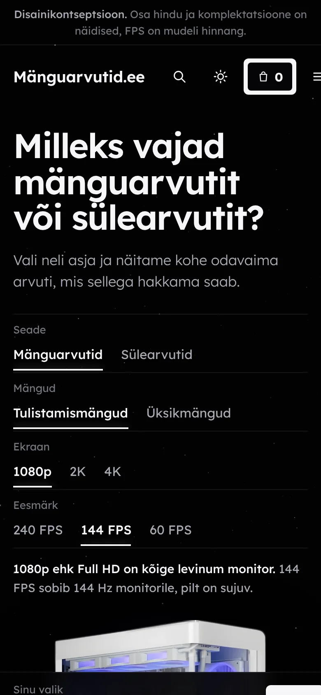
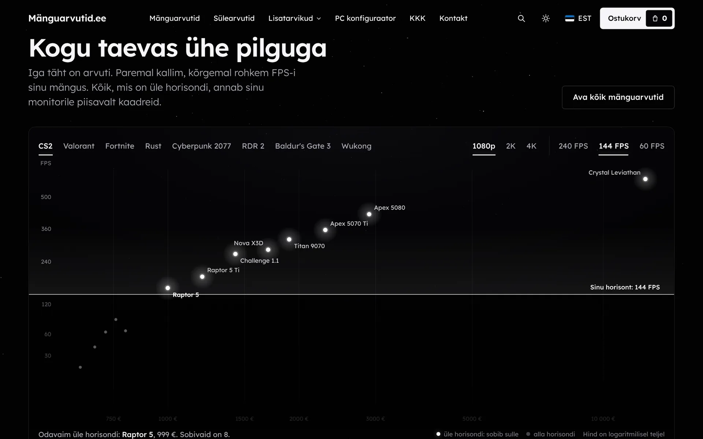
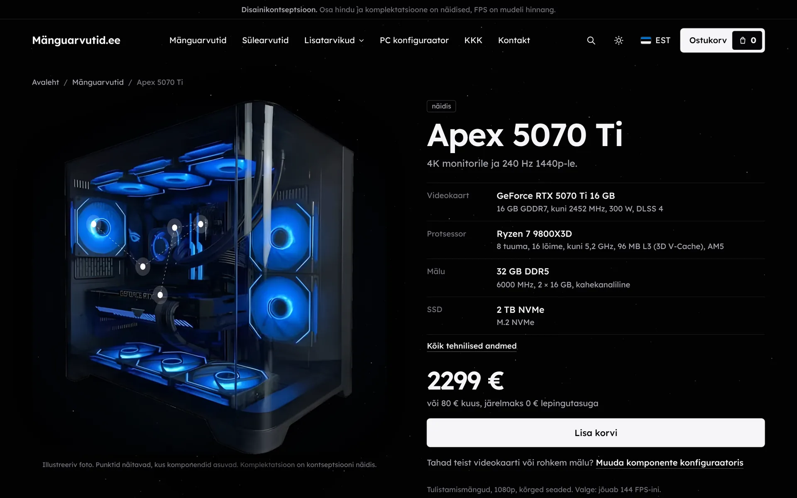
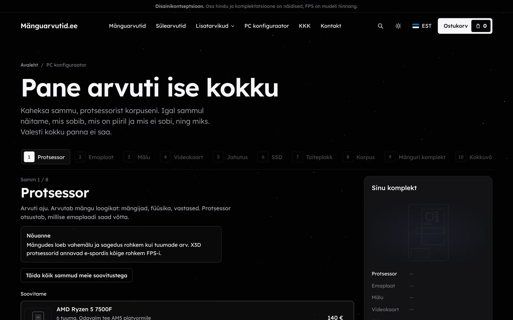
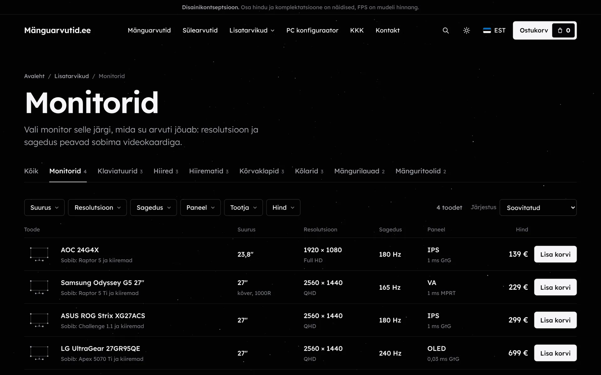
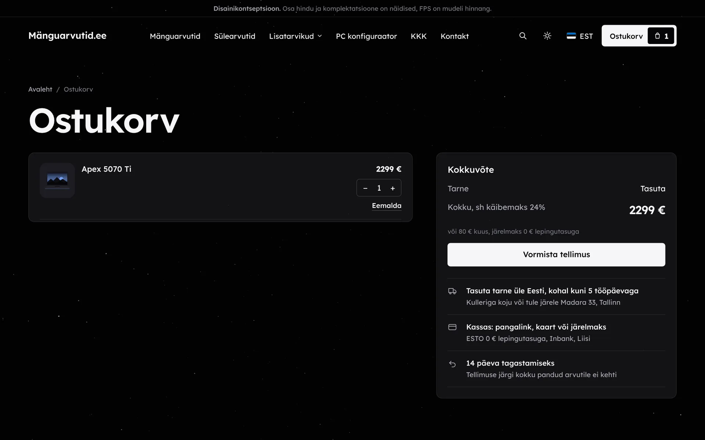

06Tähekaart· Mänguarvutid.ee redesign · unofficial concept
“Which PC will run my game?”
Mänguarvutid.ee sells gaming PCs in Tallinn. A catalogue of graphics-card names only helps people who already know the answer. “Tähekaart” (star map) is my redesign concept: say what you play, and the shop does the comparing.
- Role
- Solo and self-initiated: UX review, concept, UI. Theme code written with Claude under my direction
- When
- October 2026
- Built with
- Shopify theme (Liquid, CSS, JavaScript), my own first-screen sketch. AI: Claude
- Status
- Independent concept, not affiliated with the shop. Part of the prices and builds are samples; frame rates are modelled
- Who did what
- Me: the first-screen sketch, the decisions, sign-off on every page. Claude: the theme code, the sample data

01The question
The buyer knows the game. The shop answers in part numbers.
Someone buying a first gaming PC knows three things: what they play, what monitor they have and how smooth they want it. A product list answers in RTX 5070, Ryzen 5 7600X and DDR5. Between the two sits a comparison most people cannot make.
This is my reading of the public site, not the shop’s sales data. I would check it against their analytics before changing a live store.
02What I decided
- 1
Four choices instead of a spec sheet
Device, kind of games, resolution, target frame rate. Each choice explains itself in one line (“1080p is the most common monitor”).
- 2
The cheapest PC that manages it comes first
Not the most expensive one. The card shows frames per second in four named games and marks which of them reach the target.
- 3
The catalogue is a sky
Every PC is a star: further right costs more, higher gives more frames in your game. A horizon line sits at your target, and everything above it will do.
- 4
Specifications stay, in second place
Name, key parts with their real numbers, a large price, Add to cart. When the button scrolls away, a buy bar follows.
- 5
A configurator for those who know
Eight steps from processor to case. At each one the shop says what fits, what is at the limit and what will not work together.
- 6
The shop’s own trust signals, up front
Built in Tallinn, tested before shipping, two physical stores, instalments. They sit directly under the recommendation, where the doubt is.
03The screens



04Where the map stops
A sky works for a few dozen PCs. It would not work for hundreds of monitors.
The map needs one axis everybody understands, and gaming PCs have it: frames per second. Accessories do not. So that part of the store is an ordinary list with filters by the properties people actually compare, a sort order and a count, and each row says which PC it suits.
The cart keeps the answers to the last doubts next to the checkout button: delivery, how to pay, returns.


05How I would know it works
- 1
Hypothesis
People who state what they play reach a product page more often than people who start from the catalogue.
- 2
What I would measure
Share of visits that reach a product page, add-to-cart rate from the picker against the list, and how often the first recommendation is the one bought.
- 3
How
Picker against the current home page as an A/B test on the shop’s real traffic; before that, five people and one task: “find a PC for your game under your budget”.
- 4
What would make me drop it
If people skip the picker and scroll straight to the list, the list becomes the first screen and the picker a filter on top of it.
06What is real and what is not
A concept with sample data should say so on every page.
A strip at the top of the store reads “Disainikontseptsioon”: some prices and builds are samples and frame rates come from a model, not from benchmarks I ran. Product photos are marked as illustrative. Before this could go live, every number would have to come from the shop.
It also exists in a light theme, because a dark page full of stars is a choice, not a requirement.